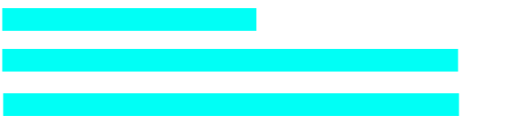

Luis Antonio Hernández Limón
Estudiante de Ingenieria en Computación en la Universidad de Guadalajara
account
(243) 453 7427
luis.limon4518@academicos.udg.mx
Zapopan, Jalisco

language
Spanish: Native Language
English B2:
- Speaking:
- Reading:
- Writting:

job skills
- Teamwork and collaboration
- Data analysis
- Critical thinking and decision-making
- Leadership and management
- Creative problem solving
- Adaptability
1
summary
Durante mi tiempo como estudiante de Ingeniería en Computación en el Centro Universitario de Ciencias Exactas e Ingenierías de la Universidad de Guadalajara, he tenido la oportunidad de aprender sobre diversas áreas de la informática y la ingeniería. He participado en proyectos de diseño de paginas web y he desarrollado habilidades en programación, algoritmos y base de datos.
He tomado cursos en computación sobre ciberseguridad y programación para internet, estoy ansioso por seguir explorando estas áreas. Además, he participado en eventos como hackathones, lo cual me ha dado una perspectiva interesante sobre la aplicación de la ingeniería en el mundo real.
Mi objetivo es seguir adquiriendo conocimientos y habilidades que me permitan contribuir al avance de la tecnología y la ingeniería.
professional experience
2024 - Present
CUCEI - Guadalajara, Jalisco
Computer Enginner
Ciberseguridad

Función
Mi función principal es adquirir conocimientos y habilidades para proteger sistemas informáticos y redes contra amenazas y ataques. Esto incluye aprender sobre diferentes tipos de malware, técnicas de hacking ético, y métodos de defensa como firewalls y sistemas de detección de intrusos.
2020 - 2023
CUCEI - Guadalajara, Jalisco
Computer Enginner
Analisis de datos
Herramientas
Como estudiante de Análisis de Datos en el Centro Universitario de Ciencias Exactas e Ingenierías de la Universidad de Guadalajara, he tenido la oportunidad de adquirir experiencia práctica en el campo. he aprendido a utilizar herramientas y lenguajes de programación como Python y SQL, lo que me ha permitido desarrollar habilidades en el manejo y análisis de datos.
Standards
- PYTHON
- SQL
- APACHE
- MICROSOFT EXCEL
2017 - 2020
Preparatoria No. 15 - Zapopan, Jalisco
Desarrollador Web
Practicante
Función
He trabajado en varios proyectos de desarrollo web, donde he aplicado mis conocimientos en HTML, CSS y JavaScript para crear sitios web funcionales y atractivos. Además, he aprendido a utilizar frameworks y bibliotecas como React y Angular, lo que me ha permitido desarrollar aplicaciones web más dinámicas y eficientes.
Herramientas
- HTML
- CSS
- JAVASCRIPT
- GITHUB
- GIT
- PHP
- VISUAL STUDIO CODE